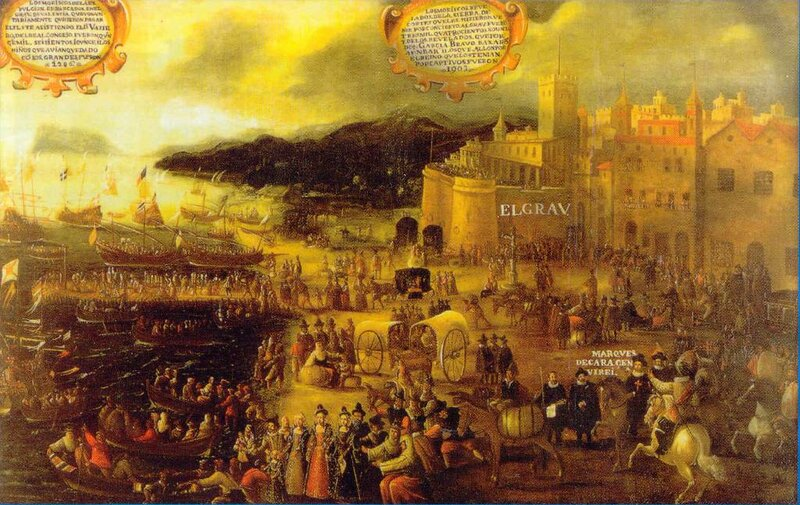

Мориски и мудехары
Продолжим тему предыдущего поста. Поговорим о морисках.

Изгнание морисков (La Expulsión de los Moriscos, картина Vicente Carducho, 1627, Museo del Prado, Madrid) (Кликабельно)
Несколько слов о терминологии. В процессе отвоевания христианами новых территорий в период Реконкисты в городах и деревнях сохранились относительно автономные мусульманские общины. Первоначально населению этих анклавов – мудехарам (исп. mudéjar) – разрешалось сохранять свои обычаи, законы и исповедовать ислам. Об этом, в частности, свидетельствует сравнительно недавно обнаруженный (опубликован в 1989 г. в Кордове) судебник («Книга Сунны и Шары мавров»), регламентирующий жизнь мудехаров на территории христиан. Но после падения в 1492 году Гранадского эмирата начался процесс насильственного обращения мудехаров в христианство. Испанские монархи издали серию законов (Pragmáticas antimoriscas), которые были направлены на насильственную христианизацию остатков мусульманского населения на территории Испании. Первый декрет был издан уже через 8 лет после падения Гранады, хотя по договору о капитуляции мусульманам бывшего эмирата (около 300 тысяч человек) разрешалось сохранять веру и родной язык при условии полной лояльности новой власти.
В 1526 году был издан последний эдикт из этой серии, охвативший Валенсию и Арагон. Он полностью запретил арабский язык, арабский алфавит, ношение мусульманской одежды, мусульманские имена и любые проявления арабо-мусульманской культуры.
Новообращенных христиан (а впоследствии и их потомков) стали называть (сначала лишь в Кастилии, а затем и во всей Испании) морисками (исп. moriscos). Считается, что мориски продолжали тайно исповедовать ислам.
Долгое время «прагматические эдикты» не соблюдались (бюрократы всегда отличались коррупцией), но в 1567 году, на фоне усиления османов в Средиземноморье, власть решила усилить контроль за исполнением этих законов, подключив к делу инквизицию. Притеснения морисков стали невыносимыми. В ход пошли классические обвинения в том, что мориски отравляют воду и пищу христиан, пьют человеческую кровь и т. п. В ответ мориски взбунтовались (так называемое Альпухарское восстание, 1568—1571 годы). Бунт был подавлен. В 1609 году Филипп III издал указ, обязавший всех морисков покинуть территорию Испании.
Замечательным свидетельством последующих событий может служить картина Кардучо, приведенная в начале поста. Следует отметить, что мы здесь практически имеем документальное свидетельство очевидца. Кардучо (1585—1638) был современником этих событий. Как и автор другого изображения:
Погрузка морисков на корабли в порту Валенсии (Embarco Moriscos en el Grao de Valencia, Pere Oromig ,1613)
Морискам разрешалось увозить только личное имущество. На корабле с них взимали плату за проезд.
Выселению подверглось около 272 тысяч человек (около 85 % из общего числа), что по состоянию на 1619 год составило около 4 % населения Испании.
Не менее 150 000 морисков было отправлено во французский порт Марсель. Большинство изгнанных (70-75%) рано или поздно осело в странах Северной Африки, где они снова приняли ислам. Та часть морисков, которые пожелали остаться христианами, предпочла переселиться в Прованс (40 000), Ливорно (Италия) или в Южную Америку.
Коротко о предыстории переселения морисков на французскую территорию. Постепенная эмиграция мусульман из Испании во Францию началась, видимо, еще при короле Франции Генрихе II (1547 – 1559). Однако достоверные данные об этом процессе относятся к правлению Генриха IV (1589 — 1610). Еще до вступления Генриха на французский престол, когда он был королем Наварры, мориски направили к нему послов для переговоров о своем возможном переселении на подвластную ему территорию. Ведение всех дел, связанных с морисками, Генрих поручил герцогу де Ла Форсу (Jacques-Nompar de Caumont, duc de La Force), будущему маршалу Франции. Однако политическая обстановка первых лет правления Генриха IV не позволила плотно заняться делами морисков. И лишь после подписания в 1598 году Вервенского мира французский монарх вернулся к этому вопросу. Были задействованы многочисленные французские тайные агенты, с целью использовать морисков для осложнения и без того непростой внутриполитической обстановки в Испании. Их деятельность стала известна Филиппу III и послужила дополнительным аргументом в принятии решения о высылке морисков.
На этом закончим наш беглый обзор условий жизни исламских и христианских меньшинств на территориях, контролируемых соответственно христианами и мусульманами. Мы, конечно же, не претендовали на создание хотя бы мало-мальски законченного освещения всех возникавших в этой связи проблем. Задачей было эскизно показать исторический фон, на котором развивались галеры той эпохи (особенно в части, касающейся комплектования и использования галерных рабов) и устранить недопонимания в оценках роли (положительной или негативной) той или иной религиозной конфессии в Средиземноморье.
В качестве вывода могу только сказать, что ни мусульмане, ни христиане не были образцом выстраивания нормальных межрелигиозных отношений, особенно в части обращения с религиозными меньшинствами на своей территории. Эти отношения, при более глубоком рассмотрении, выстраивались, исходя из политических или экономических соображений. Зверства творились не только по отношению к представителям другой религии, но и по отношению к бывшим собратьям по своей конфессии. Достаточно вспомнить религиозные войны в Европе, резню гугенотов во Франции с одной стороны, жесточайшие репрессии против мамлюков и янычар – с другой.